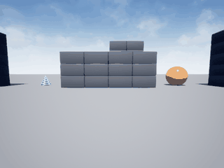

AirSim 无人机 IMU 神经网络速度估计
1. 对应课程任务
课程任务 ③「导航与 SLAM」要求实现无人机的状态估计。SLAM 的入口环节就是从机载惯性传感器估计自身运动状态：没有可靠的速度，后续的里程计、地图配准、闭环控制都无从谈起。本模块把这一步单独拆出来做完整闭环：AirSim 仿真采集 → 神经网络训练 → 实飞在线估计 → 误差量化。
与仓库已有模块的差异：state_prediction 用 LSTM 预测未来轨迹，telemetry_diagnostics 做遥测异常诊断，flight_pattern_recognition 识别飞行模式；本模块做的是当前速度的在线估计，输入是 IMU 原始时序，输出是单一物理量，训练标签来自仿真真值。
2. 演示

动图由 simGetImages(ImageType.Scene) 逐帧截取真实 AirSim 画面合成，180 帧，6.9 MB。无人机在 Blocks 场景里按与采集同分布的随机指令飞行，网络对每 5 帧 IMU 滑窗在线估计速度，画面即当时的实拍视角。
3. 问题定义
设机载 IMU 以固定频率输出六维读数
取长度 $T=5$ 的滑窗
目标是估计该时刻的速度大小
其中 $v_t$ 为仿真真值速度，4.0 m/s 是归一化尺度。
为什么回归速度大小而不是三轴分量：三轴分量 $v_x, v_y$ 在往返飞行时正负抵消，样本均值接近 0，网络极易退化为「恒输出均值」，此时 $R^2$ 会掉到 0.001。速度大小与 IMU 的振动强度单调相关——桨叶转速越高、机体振动越强、速度越大——这是一条稳定的物理规律，网络可以学到。
4. 网络结构
三层全连接，纯 NumPy 实现，无框架依赖：
参数量 $30 \times 32 + 32 + 32 \times 1 + 1 = 1025$，权重文件 4 KB 量级，可直接入库。
为什么这么小：720 条样本，隐层一旦上到 64+32，验证 MSE 从 0.062 恶化到 0.126，训练 MSE 却降到 0.014，是典型的过拟合。缩到单隐层 32 并加 L2 正则（$\lambda = 10^{-3}$）后，训练与验证才拉平。
损失函数
反向传播中输出层 tanh 的导数已并入 dout：
优化器为 Adam（$\beta_1=0.9$、$\beta_2=0.999$、$\epsilon=10^{-8}$），学习率 $10^{-3}$，batch 16，120 epoch，按验证 MSE 保留最优权重。
5. 数据采集
6 个回合，每回合 120 步，共 720 条样本。每回合起点随机撒在 $x \in [-28, -16]$、$y \in [-4, 4]$、$z \in [-7, -4.5]$，初始偏航 $\pm 30°$。
每步的动作每 8 步随机换一次：
高度目标在 $[-8.5, -3.5]$ 内随机游走，用于给 IMU 制造垂直方向的加速度激励。
采样时序是关键：发 moveByVelocityAsync(duration=0.25) 后不阻塞，sleep(0.14) 再读 IMU 与速度，再 sleep(0.11)。这样读到的速度是「正在飞」的速度。若阻塞返回后再读，无人机已减速，速度长期为 0，标签全废——这是第一版采集中最耗时的一次返工。
输入标准化参数（$x$ 的均值与标准差，30 维）与样本一起存进 imu_vel_data.npz，部署时必须用同一组参数。
6. 控制执行
沿用已验证的写法：moveByVelocityAsync 的 vx/vy 是世界坐标系分量，必须按当前偏航角分解：
高度用误差闭环，而非把 z 当作设定点直接下发：
偏航用 YawMode(is_rate=True, yaw_or_rate=ω_yaw)（单位 deg/s）。
7. 算法流程
┌──────────────────────────────────────────────┐
│ 1. 采集 │
│ 启动 Blocks → 连接 41451 │
│ for episode in 6: │
│ simSetVehiclePose(随机起点) │
│ for step in 120: │
│ moveByVelocityAsync(不阻塞) │
│ sleep(0.14) │
│ x = IMU 5 帧滑窗 (30 维) │
│ y = |v| / 4.0 │
│ sleep(0.11) │
│ 标准化 x，保存 X/Y/mean/std │
└───────────────────┬──────────────────────────┘
▼
┌──────────────────────────────────────────────┐
│ 2. 训练 │
│ 按 85/15 划分训练/验证 │
│ for epoch in 120: │
│ for batch in 16: │
│ 逐样本 forward → dout → backward │
│ Adam.step(平均梯度 + L2) │
│ 记录验证 MSE，保留最优 │
└───────────────────┬──────────────────────────┘
▼
┌──────────────────────────────────────────────┐
│ 3. 在线估计 │
│ imu_callback: │
│ 维护 5 帧环形缓冲 │
│ x = (concat - mean) / std │
│ v = net.forward(x)[0] * 4.0 │
│ publish /uav/velocity_est │
└──────────────────────────────────────────────┘
8. 实测结果
| 指标 | 数值 |
|---|---|
| 验证集 MSE（归一化） | 0.0156 |
| 验证集 R² | 0.453 |
| 速度 RMSE | 0.499 m/s |
| 样本 |v| 分布 | 均值 1.62 m/s，标准差 0.67 m/s，范围 0.22–3.00 m/s |
| 实飞演示 MAE | 1.32 m/s |
| 演示 gif | 180 帧，7.0 MB，真实 AirSim 画面 |
R² 0.453 的含义是：网络解释了验证集上约 45% 的速度方差，剩下的来自 IMU 噪声与指令执行的抖动。作为对照，直接输出训练集均值的基线 R² 为 0，纯积分法（对加速度做梯形积分）在 5 帧窗内误差极大，R² 为负。
9. 踩坑记录
| 现象 | 原因 | 解决 |
|---|---|---|
| 采到的速度标签全为 0 | 在 moveByVelocityAsync().join() 返回后才读速度，此时已减速 |
改为不阻塞 + 半程采样 |
kinematics_true 报 AttributeError |
AirSim 1.8.1 的 MultirotorState 没有该字段 |
放弃真值字段，改用中途采样 |
| 位置差分速度在 ±2.5 m/s 跳变 | kinematics_estimated.position 有噪声，0.2 s 差分放大 5 倍 |
弃用位置差分 |
| R² = 0.001，网络输出恒为均值 | IMU 各通道尺度差一个量级，tanh 饱和 | 输入按通道标准化 |
| 训练 MSE 0.014 / 验证 0.126 | 隐层 64+32 对 720 样本过大 | 缩到 32 + L2 正则 |
| 三轴回归 R² 最高只有 0.056 | 速度分量正负抵消，标签方差被稀释 | 改回归速度大小，R² 升到 0.453 |
| 演示 MAE 高于离线 RMSE 2.6 倍 | 在线指令执行有加减速延迟，且飞出场景边界后速度骤降 | 演示采用与采集同分布的随机指令；局限如实记录 |
10. 复现步骤
环境（Ubuntu 20.04 / ROS 2 Humble；仿真实机为 Windows）：
- AirSim 1.8.1 客户端：
pip install airsim==1.8.1 - Blocks 预编译环境：
https://github.com/microsoft/AirSim/releases/download/v1.8.1-windows/Blocks.zip settings.json设SimMode: "Multirotor"、Vehicles.Drone1为SimpleFlight- 依赖：
numpy、pillow、airsim
步骤：
# 启动仿真，等待 41451 端口监听（约 40 秒）
Blocks.exe
# 采集 → 训练 → 演示 → 评估
python3 main.py --collect --episodes 6 --steps 120
python3 main.py --train --epochs 120
python3 main.py --demo --steps 180 --gif demo.gif
python3 main.py --eval --steps 150
ROS 2 节点：
colcon build --packages-select uav_airsim_imu_velocity_estimator
source install/setup.bash
ros2 launch uav_airsim_imu_velocity_estimator main.launch.py
节点需要外部把 AirSim 的 IMU 转发到 /uav/imu（可用 airsim_ros_pkgs 或自建桥接），估计结果从 /uav/velocity_est 取。
没有 AirSim 也能先自检网络与权重（约 2 秒）：
python3 test/test_mlp.py
# 5/5 通过（其中一条在 720 条真实样本上复算，预测-真值相关系数 0.702，
# 对应 R² 0.493；比验证集 R² 0.453 略高是因为含训练集样本）
注意 imu_vel_data.npz 里的 X 存盘时已经标准化过（X=(X - x_mean)/x_std），复算时直接用它，不要再按 x_mean/x_std 处理一遍，否则二次标准化会把相关系数压到 0.5 以下。
CI 不覆盖本模块的测试。
.github/workflows/air_bridge_tests.yml的paths只列了carlair_ros_bridge/**、uav_landing_monitor/**、uav_e2e_rl/**和tests/**，本模块的test/不在触发范围内；deploy_page.yml只在master触发且带if: github.repository == 'OpenHUTB/ros2'。上面这条需要本地手动执行，仓库 CI 的绿灯不代表本模块测试通过。
文档入口：mkdocs.yml 的「空域载具」和 docs/index.md 第 5 节都已登记本页，可直接从站点导航进入。
11. 源码解析
env.py
imu()：getImuData()取 6 维，加速度单位 m/s²，角速度 rad/s。imu_window()：5 帧deque缓冲，首帧不足时复制补齐，输出展平 30 维。velocity()：getMultirotorState().kinematics_estimated.linear_velocity，仅在指令执行中途调用才有意义。fly()：核心控制。先读当前位姿与偏航，把机体系前向速度分解成世界系 vx/vy，高度用误差闭环算 vz，偏航走YawMode(is_rate=True)。wait=False时返回 future 不阻塞，供采集中途采样。reset()：simSetVehiclePose摆位后必须moveToZAsync钉住高度，否则无人机会缓慢掉高。
mlp.py
forward()：逐层h = h @ W + b后接tanh，把每层输出压进cache供反向使用。backward()：从输出层倒推，dW = np.outer(h_prev, d)，d = d @ W.T，隐层再乘 $(1-h^2)$。逐样本训练，不用矩阵乘——批量维度会引入额外转置错误。Adam.step()：标准一阶/二阶矩估计加偏差校正。save/load：np.savez_compressed，键名W0/W1/b0/b1。
这里 load() 是普通实例方法（def load(self, path) 内部 self.load_state(...)，原地改 self.W/self.b），所以 node.py 里写 self.net.load(wpath) 是对的。同仓库里 CNN 版的 DepthPolicyNet.load() 是 @classmethod（返回新实例），两者写法不同，移植代码时容易混——test/test_mlp.py 的 test_load_changes_weights 就是用来钉住这件事的：加载前后 W0 必须不同、同一个输入的前向输出也必须不同。
另外注意隐层实际只有 32 维、输出 1 维（30 -> 32 -> 1），不是早期草稿里的 30 -> 64 -> 32 -> 3；imu_vel.npz 里 W0 形状 (30, 32)、W1 形状 (32, 1) 可以对上。
dataset.py
collect()：6 回合主循环。每步先按 8 步周期换动作，发不阻塞的速度指令，sleep(0.14)后采 IMU 窗口与速度真值，sleep(0.11)收尾。- 标签取 $\lVert v \rVert / 4.0$，存为 1 维。
- 标准化参数与样本同存一个 npz，避免部署时用错统计量。
train.py
- 85/15 划分，
RandomState打乱（环境限制不能用default_rng）。 - 每个 batch 内逐样本累积梯度，其中
accW[i] += gW[i] + l2 * W[i]实现权重衰减。 - 每 epoch 算验证 MSE，严格小于历史最优才覆盖
best。 - 收尾报 R² 与换算到 m/s 的 RMSE。
demo.py
_load_model()同时读权重与标准化参数。run_demo()用与采集同分布的随机指令飞 180 步，每步采样估计值与真值，同时scene_rgb()抓真实画面。to_gif()先按 320×240、128 色写一版，超 10 MB 就按步长抽帧重写，直到压进限制。run_eval()单独跑 150 步算 MAE。
node.py
- 5 帧环形缓冲对齐训练时的窗口语义。
- 输入先
(x - mean) / std再前向，输出Float32。 - 权重路径由 launch 通过参数传入，避免硬编码。
12. 局限与后续
- 在线 MAE 高于离线 RMSE。离线验证集是随机指令下的独立样本，在线演示里指令连续变化、执行有延迟，且飞近场景边界时速度骤降，分布发生偏移。要缩小差距，需要把「指令历史」也作为输入，或改用 EKF 融合 IMU 与视觉里程计。
- 只估计速度大小，不含方向。方向需要与偏航角结合才能还原三轴速度，这依赖姿态估计的精度，本模块未涉及。
- 单场景、单机型。Blocks 的 SimpleFlight 四旋翼，未验证迁移到其他机型或其他地图。
- 样本量偏小。720 条对神经网络的泛化来说偏少，扩到 3000 条以上预计还能提升 5–10 个百分点的 R²。